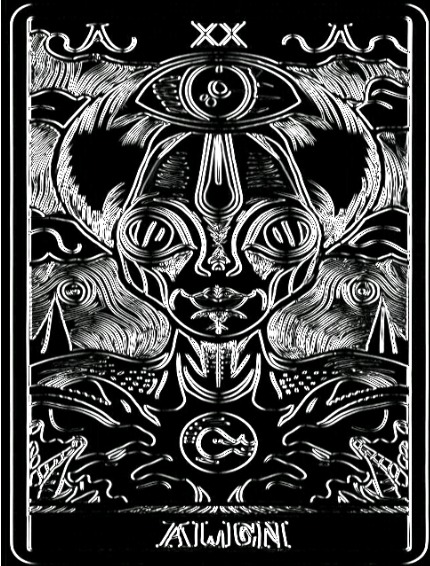
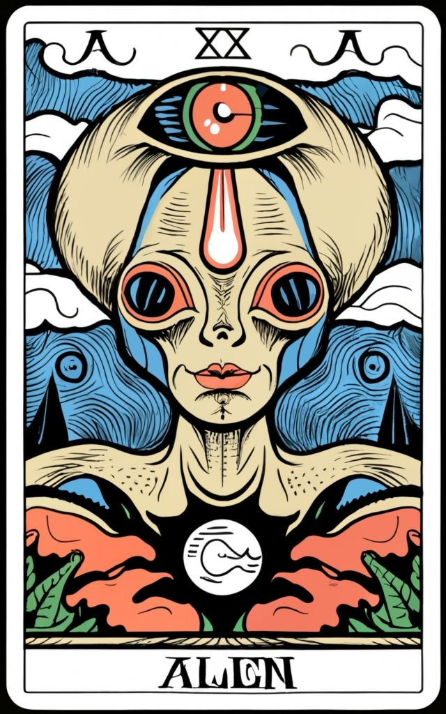
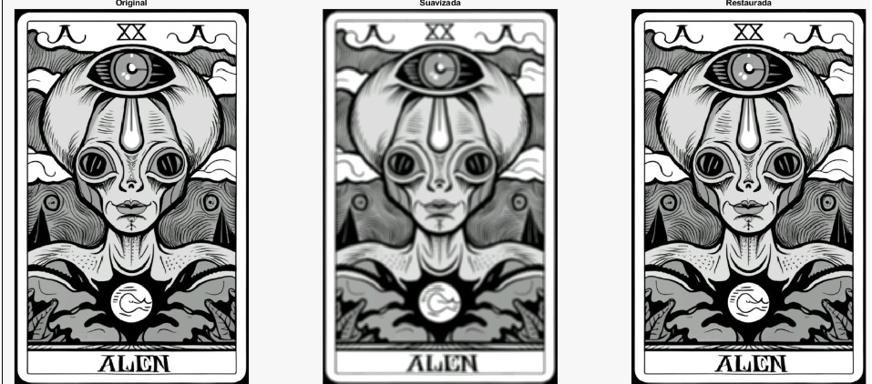
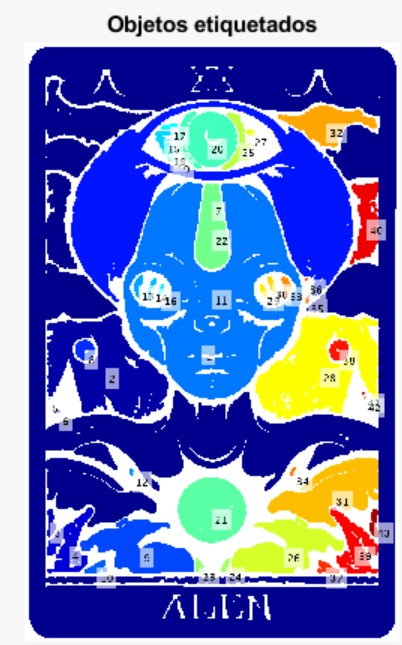
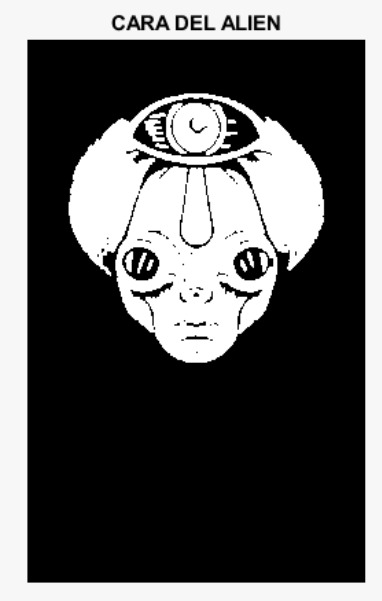

Tarea 1
Transformaciones de intensidad y filtrado espacial

Colección de prácticas y proyectos desarrollados en MATLAB para el análisis, filtrado y procesado de imágenes digitales.
Partiendo de la imagen base, se han aplicado diversas técnicas de procesamiento digital de imágenes (transformaciones de intensidad, filtrado en frecuencia, segmentación y análisis morfológico) para mejorar su calidad y extraer características estructurales.

Transformaciones de intensidad y filtrado espacial

Filtrado en el dominio de la frecuencia

Segmentación de Imagen

Procesamiento morfológico
